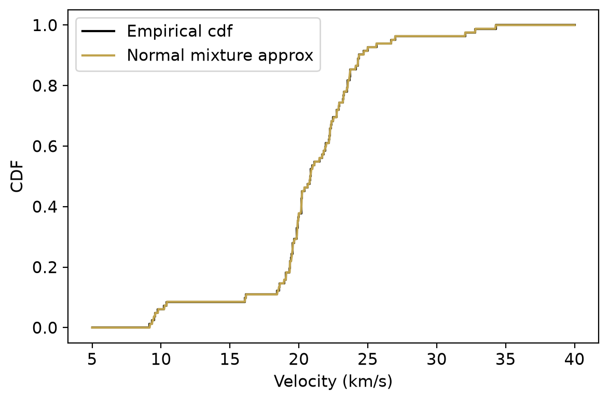

Modeling galaxy velocities with a Dirichlet process mixture model
Author
Mattias Villani
Introduction
The galaxy velocity data1 consists of the velocities of 82 galaxies (measured in 1000km/s, after transformation). The scientific question is whether or not the velocities of the galaxies cluster around a few values, which would indicate that the galaxies are part of a few superclusters2.
The analysis here first explores the Dirichlet process as a prior directly on the distribution (cdf) of the velocities before moving on to the more interesting Dirichlet process mixture (DPM) model. The DP mixture makes it possible to learn about the number of mixture components in the data, i.e. to explore the possibility of superclusters of galaxies.
Code for loading packages and plot settings.
import numpy as npimport pandas as pdimport matplotlib.pyplot as pltfrom scipy import statsimport warningswarnings.filterwarnings('ignore')colors = ["#6C8EBF", "#c0a34d", "#780000", "#007878","#b5c6df", "#eadaaa", "#AE6666", "#4CA0A0", "#bf9d6c"]plt.rcParams.update({'axes.grid': False, 'figure.dpi': 100, 'font.size': 11})np.random.seed(123)
The data are available in the galaxies dataset from the MASS package in R, also mirrored in the Rdatasets repository. We inspect the data by plotting a histogram and a kernel density estimate using cross-validation to select the optimal bandwidth. At least three clusters are visible in the histogram, while the kernel density estimate suggest up to seven clusters.
When we later combine the empirical cdf with a Dirichlet process prior to form the posterior distribution it will be convenient to have a proper distribution object for the empirical cdf. We therefore approximate it with a mixture of normals with components with tiny (\(10^{-15}\)) variances, effectively making it a mixture of Dirac spikes at the data points with equal weights \(1/n\). The plot below shows that the approximation is virtually identical to the true empirical cdf.
def cdf_Fn(x_vals):return np.mean( [stats.norm.cdf(x_vals, loc=v, scale=1e-10) for v in velocity], axis=0 )fig, ax = plt.subplots(figsize=(6, 4))ax.step(xs, ps, where='post', color='black', label='Empirical cdf')ax.plot(xGrid, cdf_Fn(xGrid), color=colors[1], label='Normal mixture approx')ax.set_xlabel('Velocity (km/s)')ax.set_ylabel('CDF')ax.legend()plt.tight_layout()plt.show()

Prior distribution
Let \(P\) denote the unknown distribution for the galaxy velocities. We use a Dirichlet process for \(P\), denoted by \(P \sim \mathrm{DP}(\alpha_0P_0)\). The \(P_0\) is the so called base measure and is our best prior guess (prior expected value) of \(P\). We take \(P_0\) to be the \(N(30,3^2)\) distribution. The scalar parameter \(\alpha_0\) is the prior concentration or prior precision, which is inversely related to the variance around \(P_0\). We start with low prior concentration \(\alpha_0=1\) and later explore the effect of changing \(\alpha_0\).
At this stage we would like to simulate draws from the DP prior and plot the resulting distribution realizations, to get a feeling for the effect of \(\alpha_0\). The so called stick-breaking representation of the Dirichlet process is a constructive characterization that makes it easy to simulate from a DP. The stick-breaking representation of the Dirichlet process is an infinite mixture of point masses \(\delta_{\theta_k}\) at locations \(\theta_k\) with weights \(\omega_k\):
The function below simulates from the Dirichlet process using the stick-breaking construction. The input r_P0 is a callable that draws from the base measure \(P_0\), and epsilon is the remaining stick length when the simulation terminates.
We can simulate a large number of draws and construct \(95\%\) prior pointwise credible intervals for \(P\), showing the variation in the prior. Here are the (pointwise) prior credible intervals for \(\alpha_0=1\).
is a mixture of the prior mean and the empirical cdf. We compute the posterior by combining the two components with weights \(\alpha_0/\alpha_n\) and \(n/\alpha_n\):
The posterior distribution for \(P\) in the above analysis is almost surely discrete. This is an undesirable consequence of the Dirichlet process prior whenever \(P\) is thought to be a continuous distribution.
However, the almost sure discreteness of the DP can be turned into a useful feature if the DP is used as mixing measure in a mixture model. A mixture model for the random variable \(X\) is of the form
where \(p(x\vert\theta)\) is the kernel distribution with parameter vector \(\mathbf{\theta}\) and \(P(\mathbf{\theta})\) is the mixing distribution. The notation \(dP(\mathbf{\theta})\) comes from measure theory and \(P(\cdot)\) is a probability measure. This more general version of the integral makes it possible for \(P(\cdot)\) be both a discrete and continuous probability distribution, or a mixture of the two types. There are three basic types of mixture distributions:
Continuous mixtures where \(P(\mathbf{\theta})\) is a continuous distribution with density \(p(\theta)\) so we can write the more familiar integral \(p(x) = \int p(x \vert \mathbf{\theta})p(\mathbf{\theta})d\mathbf{\theta}\). Example: the student \(t\) density is a mixture of Gaussian kernels where the variance parameter of the kernel is mixed with respect to a scaled-inverse-chi-square distribution.
Finite discrete mixtures \[p(x) = \sum_{k=1}^K \omega_k \cdot N(x\vert \mu_k, \sigma_k^2),\]
where the kernel is again Gaussian, but the mixing distribution is a mixture of \(K\) point masses for the mean and variance of the kernel. Since the mixing distribution \(P(\cdot)\) is discrete here, the integral reduces to a sum.
Infinite discrete mixtures \[p(x) = \sum_{k=1}^\infty \omega_k \cdot N(x\vert \mu_k, \sigma_k^2),\]
where the most popular version is the Dirichlet Process Mixture (DPM) model, which is obtained when \(P(\mathbf{\theta})\) is a random distribution following a Dirichlet process. The Dirichlet Process Mixture (DPM) model can be written \[
\begin{aligned}
x_i \vert \mathbf{\theta}_i &\overset{iid}{\sim} p(x_i \vert \mathbf{\theta}_i) \\ \mathbf{\theta}_i \vert P &\overset{iid}{\sim} P \nonumber \\
P &\sim \mathrm{DP}(\alpha_0 P_0)
\end{aligned}
\]
Since realizations from the DP is almost surely discrete there will usually be several observations sharing the same parameter value \(\mathbf{\theta}_j^{\star}\). In the case with a Gaussian kernel, the parameter vector is \(\mathbf{\theta} =(\mu,\sigma^2)\) and the base measure \(P_0\) is taken to be the conjugate prior:
\[
\begin{aligned}
\mu \vert \sigma^2 \sim N\bigg(\mu_0,\frac{\sigma^2}{\kappa_0}\bigg) \\
\sigma^2 \sim \mathrm{Inv}-\chi^2(\nu_0, \sigma_0^2)
\end{aligned}
\]In the Gibbs sampler presented below, we will need to compute the posterior of \(\mathbf{\theta} =(\mu,\sigma^2)\) for all the observations currently allocated to a mixture component. This little helper function computes the posterior parameters \(\mu_n,\kappa_n,\sigma_n^2\) and \(\nu_n\) from a given data vector x:
def post_normal_model(x, mu0, sigma2_0, kappa0, nu0):iflen(x) ==0:return mu0, sigma2_0, kappa0, nu0 xbar = x.mean() n =len(x) kappa_n = kappa0 + n w = n / kappa_n mu_n = w * xbar + (1- w) * mu0 nu_n = nu0 + n sumsqr = np.sum((x - xbar)**2) sigma2_n = (nu0 * sigma2_0 + sumsqr + (kappa0 * n / kappa_n) * (xbar - mu0)**2) / nu_nreturn mu_n, sigma2_n, kappa_n, nu_n
The Scaled inverse Chi-square distribution used as the prior on \(\sigma^2\) can be simulated using the chi-squared distribution: if \(X \sim \chi^2(\nu)\) then \(\nu\tau^2/X \sim \mathrm{Inv}\text{-}\chi^2(\nu, \tau^2)\).
def r_scaled_inv_chi2(nu, tau2):return nu * tau2 / np.random.chisquare(nu)
The complete blocked Gibbs sampler for the DPM model with Gaussian components is given below. The sampler was developed in (Ishwaran & James, 2001); see also (Villani, 2026). The prior precision \(\alpha_0\) can be fixed, or assigned a \(\alpha_0 \sim \mathrm{Gamma}(g,h)\) prior and learned from the data. If alpha0 = None then \(\alpha_0\) is estimated.
After setting the prior hyperparameters and upper bound of the number of mixtures components, we run the Gibbs sampler for n_burn=1000 iterations as burn-in and then another n_iter = 10000 for posterior inference.
A helper function computes the posterior mean density by averaging mixture pdfs over a thinned set of MCMC draws, and a second helper draws the bar chart for the number of occupied components.
def compute_post_mean_pdf(mu_draws, sigma2_draws, omega_draws, xGrid, K, plt_iter): pdf_mat = np.zeros((len(plt_iter), len(xGrid)))for i, idx inenumerate(plt_iter): pdf_mat[i] =sum( omega_draws[idx, k] * stats.norm.pdf(xGrid, mu_draws[idx, k], np.sqrt(sigma2_draws[idx, k]))for k inrange(K) )return pdf_mat.mean(axis=0)def make_base_ax(ax): ax.hist(velocity, bins=20, density=True, color=colors[5], edgecolor=colors[1], linewidth=0.5, label='histogram') ax.plot(xGrid, kde(xGrid), color=colors[0], linewidth=1.5, label='kde') ax.set_xlim(xlimits) ax.set_xlabel('Velocity (km/s)') ax.set_ylabel('density')def plot_K_bar(K_occ, ax): K_max = K_occ.max() freq = [np.mean(K_occ == k) for k inrange(K_max +1)] ax.bar(range(K_max +1), freq, color=colors[4], edgecolor=colors[0], linewidth=0.5) ax.set_xlabel('Number of components') ax.set_ylabel('density') ax.set_title('Posterior for number of components')
Plot the posterior mean of the fitted density for \(\alpha_0=1\).
Ishwaran, H., & James, L. F. (2001). Gibbs sampling methods for stick-breaking priors. Journal of the American Statistical Association, 96(453), 161–173.
Postman, M., Huchra, J. P. and Geller, M. J. (1986) Probes of large-scale structures in the Corona Borealis region. Astronomical Journal92, 1238–1247.↩︎